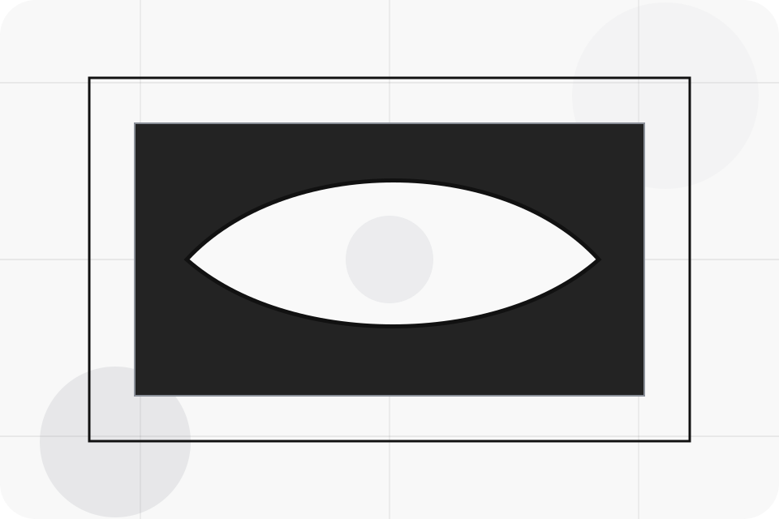
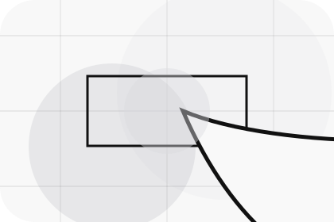
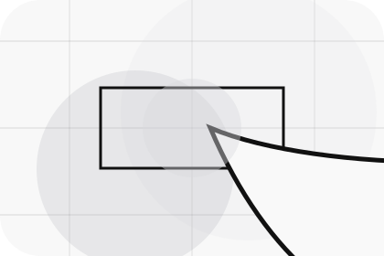
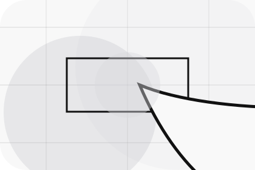
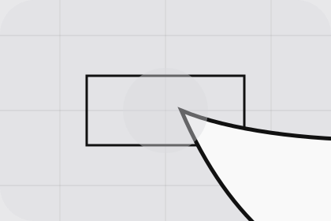

Context
Accessories gives the page a specific angle instead of repeating the navigation label.
Parts / 01
Parts opens as a clear automotive decision hub: what Motor offers, who it helps, why it matters, and which route to take first.
The first screen combines positioning, proof, primary action, and fast internal navigation, so people can act immediately or compare the rest of the parts route with context.
Stark vehicle product hero
Select the closest route and Motor keeps the next step, proof, and follow-up expectation aligned with purchase confidence and desire.

Parts / 02
Accessories adds dark context to the parts route, using the minimal ev showroom structure to support purchase confidence and desire before visitors choose a next step.
Motor uses precise vehicle cards and focused copy to make the decision easier to scan, aligning the section with purchase confidence and desire rather than filling space.
Explore PartsAccessories gives the page a specific angle instead of repeating the navigation label.
The precise vehicle cards show what to compare, what to avoid, and what matters most for automotive, vehicles & mobility products visitors.
The final cue points to a useful internal route so the section keeps the journey moving.
Parts / 03
Tyres adds dark context to the parts route, using the minimal ev showroom structure to support purchase confidence and desire before visitors choose a next step.
Motor uses precise vehicle cards and focused copy to make the decision easier to scan, aligning the section with purchase confidence and desire rather than filling space.
Explore Parts

Tyres gives the page a specific angle instead of repeating the navigation label.
Parts / 04
Genuine adds dark context to the parts route, using the minimal ev showroom structure to support purchase confidence and desire before visitors choose a next step.
Motor uses precise vehicle cards and focused copy to make the decision easier to scan, aligning the section with purchase confidence and desire rather than filling space.
Explore PartsGenuine gives the page a specific angle instead of repeating the navigation label.
The precise vehicle cards show what to compare, what to avoid, and what matters most for automotive, vehicles & mobility products visitors.
The final cue points to a useful internal route so the section keeps the journey moving.
Parts / 05
Compatibility adds dark context to the parts route, using the minimal ev showroom structure to support purchase confidence and desire before visitors choose a next step.
Motor uses precise vehicle cards and focused copy to make the decision easier to scan, aligning the section with purchase confidence and desire rather than filling space.
Explore PartsCompatibility gives the page a specific angle instead of repeating the navigation label.
The precise vehicle cards show what to compare, what to avoid, and what matters most for automotive, vehicles & mobility products visitors.
The final cue points to a useful internal route so the section keeps the journey moving.
Parts / 06
Ordering adds dark context to the parts route, using the minimal ev showroom structure to support purchase confidence and desire before visitors choose a next step.
Motor uses precise vehicle cards and focused copy to make the decision easier to scan, aligning the section with purchase confidence and desire rather than filling space.
Explore PartsMotor structures ordering around context, judgment, and a clear next route so visitors can compare the block quickly before they book a test drive.
Book Test DriveParts / 08
Availability adds dark context to the parts route, using the minimal ev showroom structure to support purchase confidence and desire before visitors choose a next step.
Motor uses precise vehicle cards and focused copy to make the decision easier to scan, aligning the section with purchase confidence and desire rather than filling space.
Explore PartsAvailability gives the page a specific angle instead of repeating the navigation label.
The precise vehicle cards show what to compare, what to avoid, and what matters most for automotive, vehicles & mobility products visitors.

The final cue points to a useful internal route so the section keeps the journey moving.
Parts / 09
Help makes the contact path concrete: what to send, how the response works, and what Motor needs before visitors book a test drive.
The section reduces contact friction by naming the channel, expected detail, privacy path, and response expectation instead of dropping visitors into a generic form.
Open ContactWhat information helps Motor respond with a useful answer instead of a generic reply.
How the visitor should think about response, urgency, location, or availability.
The expected next message keeps scope, timing, and the first practical step clear.
Parts / 10
Motor closes the parts route with a clear action, a quick reminder of the value, and a low-friction way to book a test drive.
Visitors who are ready can use the primary action. Visitors who are still comparing can scan the section links, proof, and support routes before they book a test drive.
Book Test DriveThe final block keeps the choice simple: act now, compare one more proof route, or send enough detail for a focused response.
Book Test Drivepurchase confidence and desire
A vehicle showroom site with precise white space, car-card rhythm, finance paths, and test-drive CTAs. Parts ends with a direct path to book a test drive, plus enough context for visitors who still need to compare.

Book Test DriveInformation is provided for planning and should be reviewed for the final client, location, and operating rules.